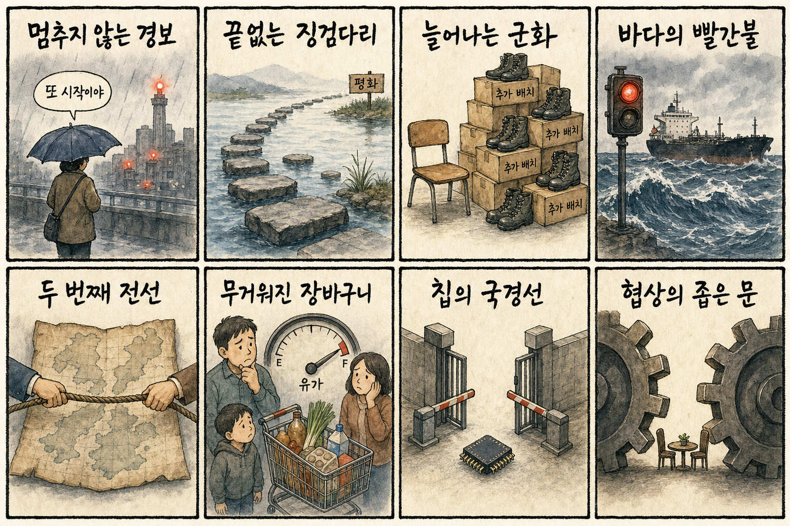
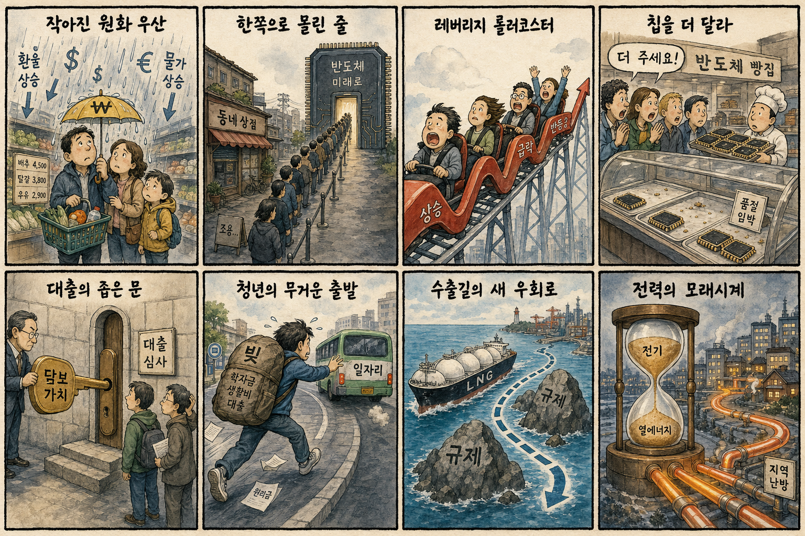

01
링센트럴 25.09% 급등 — 실적 개선과 AI 협력 기대
내용요약 링센트럴은 48.31달러로 25.09% 급등했습니다. 2분기 실적 호조와 배당 확대, 기업용 AI 협력 뉴스가 수익성 개선 기대를 키웠습니다.
예상여파 기업용 AI가 소프트웨어 매출과 이익으로 연결되는 사례가 부각돼 국내 업무자동화·클라우드 종목의 실적 검증 관심이 높아질 수 있습니다.
MORNING_BRIEFING_20260726
작성 시각: 2026-07-26 06:40 KST · 직전 미국장과 2026-07-26 KST 당일 공개 기사 기준
7월 24일 미국 정규장은 다우 +0.46%, S&P 500 +0.05%, 나스닥 -0.64%로 엇갈렸습니다. 경기민감주와 실적 호조 종목은 버텼지만 기술주는 차익실현을 받았습니다. 월요일 한국장은 대형 반도체의 변동성 속 데이터센터 전력·원전과 실적형 가치주의 상대강도를 구분해 볼 필요가 있습니다.
| 지수 | 종가 | 등락률 | 한국 증시 영향 |
|---|---|---|---|
| 다우존스 | 51,947.25 | 0.46% | 경기민감·가치주가 방어하며 한국 대형 가치주 심리에 완충 |
| S&P 500 | 7,411.98 | 0.05% | 보합권 상승으로 위험선호는 유지되지만 추격 동력은 제한 |
| 나스닥 종합 | 24,975.82 | -0.64% | 기술주 조정이 국내 반도체·성장주의 단기 변동성을 키울 수 있음 |
다우는 올랐지만 나스닥은 0.64% 내려 기술주 피로가 확인됐습니다.
디지털리얼티는 급등한 반면 AI 클라우드와 반도체 일부는 큰 폭 조정을 받았습니다.
SMR 협력과 데이터센터 실적이 전력원·전력기기 투자 논리를 지지합니다.
환율과 외국인 수급을 확인하며 실적과 계약이 확인된 종목 위주로 선별합니다.
| 종목 | 등락률 | 종가 비교 | 연결 메모 |
|---|---|---|---|
| SK하이닉스 | -8.34% | 1,919,000원 → 1,759,000원 | HBM 장기 수요 연결 |
| HD현대일렉트릭 | -6.79% | 869,000원 → 810,000원 | 데이터센터 전력 인프라 연결 |
| S-Oil | +0.93% | 149,800원 → 151,200원 | 국제유가 상승 연결 |
| 지수 | 종가 | 등락률 | 해석 |
|---|---|---|---|
| 다우존스 | 51,947.25 | 0.46% | 경기민감·가치주가 방어하며 한국 대형 가치주 심리에 완충 |
| S&P 500 | 7,411.98 | 0.05% | 보합권 상승으로 위험선호는 유지되지만 추격 동력은 제한 |
| 나스닥 종합 | 24,975.82 | -0.64% | 기술주 조정이 국내 반도체·성장주의 단기 변동성을 키울 수 있음 |
원전·전력기기, 데이터센터 리츠 연결주, 의료서비스, 정유·방산
고평가 AI 클라우드, 광통신·반도체 중소형주, 레버리지 성장주, 항공·화학
내용요약 링센트럴은 48.31달러로 25.09% 급등했습니다. 2분기 실적 호조와 배당 확대, 기업용 AI 협력 뉴스가 수익성 개선 기대를 키웠습니다.
예상여파 기업용 AI가 소프트웨어 매출과 이익으로 연결되는 사례가 부각돼 국내 업무자동화·클라우드 종목의 실적 검증 관심이 높아질 수 있습니다.
내용요약 테넷 헬스케어는 233.20달러로 17.17% 올랐습니다. 2분기 이익과 수익성 지표가 시장 예상을 웃돈 것이 상승 동력으로 거론됐습니다.
예상여파 미국 의료서비스 수요의 방어력이 확인되며 국내 헬스케어에서도 매출 가시성과 현금흐름이 좋은 종목 선호가 강화될 수 있습니다.
내용요약 데이터센터 리츠 디지털리얼티는 199.08달러로 11.01% 상승했습니다. 2분기 실적과 AI 데이터센터 임대 수요가 투자심리를 끌어올렸습니다.
예상여파 데이터센터의 부동산·전력·냉각 수익화가 재평가되며 국내 전력기기와 열관리 공급망에 우호적인 연결고리가 생깁니다.
내용요약 맥스리니어는 71.59달러로 21.54% 떨어졌습니다. AI 광통신 매출과 실적 개선 뉴스에도 앞선 급등 이후 높은 기대를 되돌리는 매물이 크게 출회됐습니다.
예상여파 AI 광통신은 성장률만큼 밸류에이션 부담에도 민감하다는 신호여서 국내 광부품·통신장비주의 추격 매수에는 주의가 필요합니다.
내용요약 AI 클라우드 기업 네비우스는 187.77달러로 15.02% 하락했습니다. 대규모 계약 기대와 주가 선반영 뒤 AI 인프라 종목 전반의 차익실현이 겹쳤습니다.
예상여파 AI 인프라 수요는 견조해도 자본집약적 사업의 투자비와 수익성 검증이 강화돼 국내 관련주의 변동성도 커질 수 있습니다.
주말 뒤 첫 거래일에는 나스닥 약세와 국내 대형 반도체의 직전 급락이 부담입니다. 반면 미국 데이터센터 리츠의 실적 호조, 구글의 SMR 협력, 중동 에너지 시설 위험은 원전·전력기기·정유·방산으로 관심을 분산시킬 수 있습니다. 원/달러 환율과 SK하이닉스의 낙폭 회복, 외국인 선물 수급을 함께 확인하는 접근이 유효합니다.
| 한국 종목 | 연결 이유 | 단기 확인 포인트 |
|---|---|---|
| 두산에너빌리티 | 구글·웨스팅하우스의 차세대 SMR 협력과 대미 원전 투자 뉴스가 AI 데이터센터용 기저전력 수요로 연결됩니다. | 원전주 동반 거래대금, 해외 수주 공시, 기관 순매수 |
| 삼성SDS | 앤트로픽 클로드를 활용한 기업용 AI 확대가 생성형 AI의 실제 유료 업무 적용과 클라우드 매출 성장에 연결됩니다. | 사업 계약 공개, 클라우드 매출 비중, 장 초반 갭 유지 |
| HD현대일렉트릭 | 디지털리얼티 실적 호조와 AI 데이터센터 전력 확보 경쟁이 변압기·배전기기 수요를 지지합니다. | 미국 전력 인프라주 흐름, 외국인 수급, 수주잔고 업데이트 |
반도체 대형주의 낙폭 회복과 현·선물 동반 매매를 봅니다.
낮아진 원화 실질가치가 수입물가와 외국인 위험선호에 미치는 영향을 확인합니다.
사우디 원유시설 공격 뉴스가 유가·정유·항공 업종에 반영되는지 봅니다.
미국 AI 클라우드 급락이 국내 광통신·서버주로 번지는지 구분합니다.
핵심 요약: AI 투자 경쟁은 HBM과 기업용 소프트웨어를 넘어 데이터센터 전력원과 초기 연구기업 자금조달로 넓어졌습니다. 다만 대규모 공급 전망은 공식 계약과 실제 매출로 이어지는지를 분리해 확인해야 합니다.
내용요약 구글이 웨스팅하우스와 차세대 소형모듈원전 협력을 추진하며 AI 데이터센터에 필요한 안정적 전력 확보에 나섰다는 보도입니다.
예상여파 AI 인프라 투자의 병목이 칩에서 전력원으로 넓어져 원전 설계·시공과 전력기기 공급망의 장기 수주 기대를 자극할 수 있습니다.
내용요약 삼성SDS가 앤트로픽의 클로드를 활용해 보안과 업무 통합을 중시하는 기업용 AI 사업을 확대한다는 소식입니다.
예상여파 국내 생성형 AI 시장의 중심이 실험에서 유료 업무 적용으로 이동하며 클라우드·보안·시스템통합 수요가 커질 수 있습니다.
내용요약 글로벌 빅테크의 AI 반도체 조달 경쟁 속에 삼성전자와 SK하이닉스가 메모리·파운드리 협력의 핵심 공급자로 부각됐다는 보도입니다.
예상여파 HBM과 첨단 패키징의 주문 가시성은 높아지지만 최근 주가 변동성이 커 공급 계약과 실제 출하의 확인이 중요합니다.
내용요약 링크드인 공동창업자 리드 호프먼 등이 참여한 AI 연구소 프렌티스가 1억 달러 조달과 10억 달러 기업가치를 논의한다는 보도입니다.
예상여파 초기 AI 연구기업으로 자금이 다시 몰리며 모델·컴퓨팅 인재 확보 경쟁과 클라우드 사용료 수요가 함께 커질 수 있습니다.
내용요약 엔비디아가 SK하이닉스와 대규모 AI 메모리 공급 협력을 추진할 가능성이 제기됐다는 보도입니다.
예상여파 대형 장기계약 기대는 HBM 생태계에 긍정적이지만 계약 금액과 기간이 공식화되는지 구분해 볼 필요가 있습니다.
핵심 요약: 러시아·우크라이나의 상호 공습과 추가 파병 주장이 휴전 기대를 낮췄고, 흑해 민간 선박과 중동 원유시설 위험이 에너지·해운 비용을 자극하고 있습니다. 중국 AI의 부상은 기술 수출통제 논쟁을 다시 키우는 변수입니다.
내용요약 러시아와 우크라이나가 상호 공습을 이어가며 양측에서 최소 20명이 숨졌다고 YTN이 보도했습니다.
예상여파 휴전 기대가 낮아지고 에너지·곡물·물류시설 위험이 이어지면 유럽의 운송비와 방산 위험 프리미엄이 높게 유지될 수 있습니다.
내용요약 젤렌스키 우크라이나 대통령이 러시아가 북한군 3만 명의 추가 파병을 원하며 수용을 준비해 왔다고 주장했습니다.
예상여파 전쟁의 국제화 우려가 커져 한반도 안보와 대러 제재, 방산 수요를 둘러싼 정책 변동성이 확대될 수 있습니다.
내용요약 미국이 우크라이나에 흑해에서 러시아 국적이 아닌 선박에 대한 공격을 자제하라고 경고했다는 보도입니다.
예상여파 민간 해운 피해를 줄이려는 신호지만 흑해 항로의 보험료와 곡물 운송 위험은 계속 시장 변수로 남습니다.
내용요약 후티가 사우디 원유 시설을 공격하며 이란 전쟁과 맞물린 두 번째 전선 우려가 커졌다는 뉴스1 보도입니다.
예상여파 원유 공급과 홍해 항로의 동시 위험이 유가·해운 운임을 밀어 올려 항공·화학·소비물가에 부담을 줄 수 있습니다.
내용요약 중국 AI 모델 키미 K3의 확산이 엔비디아의 중국 반도체 수출 논리에 변수가 될 수 있다는 분석입니다.
예상여파 중국의 자체 모델·칩 생태계가 성장하면 미국의 수출통제 논쟁과 아시아 반도체 공급망의 지역화가 빨라질 수 있습니다.

핵심 요약: 낮아진 원화 실질가치와 코스닥 유동성 축소가 시장 부담으로 떠올랐습니다. 개인 자금은 대형주와 ETF에 집중되는 반면 중소기업의 담보 의존과 청년 부채·고용 문제는 실물경제의 자금 배분 과제를 보여줍니다.
내용요약 6월 원화의 실질가치가 금융위기 이후 가장 낮은 수준으로 내려갔고 엔화도 역대 최저라는 보도입니다.
예상여파 수출 가격경쟁력에는 도움이 될 수 있지만 수입물가와 외국인 자금 흐름에는 부담이어서 환율 민감 업종의 차별화가 예상됩니다.
내용요약 코스닥 거래대금이 15조 원대에서 5조 원대로 줄어든 반면 대형 반도체 레버리지 거래는 크게 늘었다는 보도입니다.
예상여파 유동성이 대형 반도체에 집중되면 중소형 성장주의 수급 공백과 지수 내 양극화가 더 커질 수 있습니다.
내용요약 개인투자자가 올해 코스피 주식을 110조 원 순매수하는 동안 ETF도 70조 원어치를 순매수했다는 보도입니다.
예상여파 직접투자와 지수형 상품이 동시에 커져 대형주·테마 ETF 편입 종목의 수급 영향력이 확대될 수 있습니다.
내용요약 정부가 생산적 금융을 강조하지만 중소기업 대출의 약 80%가 담보·보증에 의존한다는 보도입니다.
예상여파 혁신기업의 신용 기반 자금조달이 제한되면 정책금융의 심사 방식과 성장자금 배분 개선이 중요해집니다.
내용요약 부채가 있는 청년이 불안정 일자리로 더 빨리 내몰리며 심리적 압박이 그 경로에 영향을 준다는 연구 결과가 보도됐습니다.
예상여파 청년 금융지원이 단순 상환 유예를 넘어 고용 안정과 상담을 결합하는 방향으로 확장될 가능성이 있습니다.
